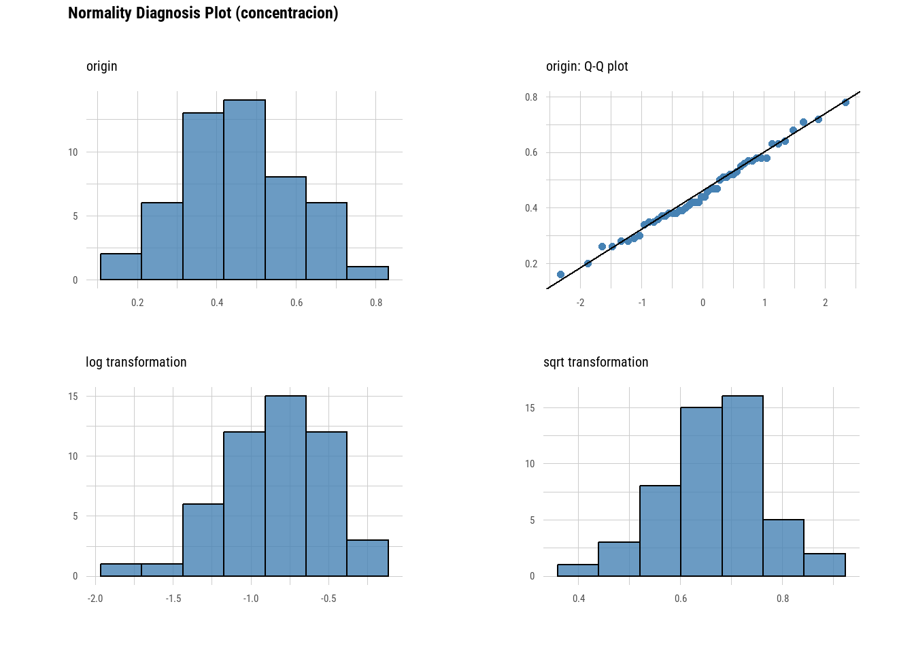

# Activamos paquetes necesarios y conocidos
library(tidyverse)
library(dlookr)
# Leemos la tabla de datos
bivalvos <- read_csv2("datos/bivalvos.txt")14 Intervalos de confianza en R
Christian Ballejo ![]()
14.1 Introducción
La contaminación por plásticos ha alcanzado incluso las zonas más remotas del océano, fragmentándose en partículas microscópicas conocidas como microplásticos (\(< 5 mm\)). Debido a su capacidad para filtrar grandes volúmenes de agua, los bivalvos como el mejillón (Mytilus edulis) actúan como bioindicadores de la salud ambiental y, al mismo tiempo, como una vía directa de transferencia de contaminantes hacia los seres humanos.
En este ejercicio, analizaremos datos basados en la investigación pionera de Van Cauwenberghe y Janssen (2014). Evaluaremos la carga promedio de microplásticos en muestras destinadas al consumo y estimaremos la magnitud de la proporción de bivalvos que superan los límites de seguridad.
Los valores de concentración de microplásticos (medidos en partículas/g) hallados en estos bivalvos estudiados se encuentran almacenadas en el archivo bivalvos.txt y se nos pide realizar los siguientes items:
- Lea el archivo y explore su contenido
- Describa estadísticamente las mediciones
- ¿Estos datos parecen tomados de una población de distribución normal?, ¿por qué?
- ¿Cuáles son los intervalos de confianza de 90 y 95% para la concentración media de microplasticos por el método frecuentista tradicional (fórmulas)?
- Construya la variable umbral_excedido tomando el valor de corte hipotético en 0,5 partículas/g (si concentración es menor o igual a 0,5 el umbral_excedido valdrá “No” y si es mayor valdrá “Si”)
- ¿Cuál es el intervalo de confianza del 95% de la proporcion de bivalvos con riesgo potencial para el consumo humano?
Veamos como llevamos adelante estos pasos mediante el lenguaje R:
- Lectura y exploración inicial
Visualizamos la estructura de la tabla de datos
glimpse(bivalvos)Rows: 50
Columns: 2
$ id <dbl> 1, 2, 3, 4, 5, 6, 7, 8, 9, 10, 11, 12, 13, 14, 15, 16, 1…
$ concentracion <dbl> 0.37, 0.42, 0.68, 0.46, 0.47, 0.71, 0.52, 0.26, 0.35, 0.…Tenemos una tabla con 50 observaciones (mediciones en bivalvos) y la variable de interés se llama concentracion (nos informan que está expresada como partículas/g de tejido húmedo)
- Describa estadísticamente las mediciones
Con la función describe() de dlookr podemos obtener los estadísticos de esta variable cuantitativa continua.
bivalvos |>
describe(concentracion)# A tibble: 1 × 26
described_variables n na mean sd se_mean IQR skewness kurtosis
<chr> <int> <int> <dbl> <dbl> <dbl> <dbl> <dbl> <dbl>
1 concentracion 50 0 0.456 0.138 0.0196 0.188 0.197 -0.299
# ℹ 17 more variables: p00 <dbl>, p01 <dbl>, p05 <dbl>, p10 <dbl>, p20 <dbl>,
# p25 <dbl>, p30 <dbl>, p40 <dbl>, p50 <dbl>, p60 <dbl>, p70 <dbl>,
# p75 <dbl>, p80 <dbl>, p90 <dbl>, p95 <dbl>, p99 <dbl>, p100 <dbl>La media (0,4556 partículas/g) y la mediana (0,44 partículas/g) son cercanas. El desvío estandar es de 0,138 partículas/g.
- A continuación debemos demostrar si los datos se aproximan a una distribución normal.
Aplicaremos el test de normalidad de Shapiro-Wilk (forma analítica)
shapiro.test(bivalvos$concentracion)
Shapiro-Wilk normality test
data: bivalvos$concentracion
W = 0.989, p-value = 0.92Un p-valor mayor a 0,05 habla de un ajuste a la curva normal (es su hipotesis nula de igualdad).
Complementamos visualizandolo graficamente con un Q-QPlot.
bivalvos |>
plot_normality(concentracion)
Los puntos se desarrollan “alrededor” a la recta de normalidad.
Con estos dos elementos podemos confirmar que la distribución se aproxima a la “Normal” y por lo tanto es confiable hacer uso de métodos paramétricos.
Si bien con ayuda del Teorema del Límite Central (TCL) sabemos que si el tamaño de la muestra es suficientemente grande, la distribución de la media muestral (o del estadístico) tiende a una distribución normal, independientemente de la forma que tengan los datos originales. En este caso, la definición de “grande” depende de varios factores, pero generalmente se considera que 30 es un buen umbral.
En la práctica, cuando trabajamos con variables continuas:
Muestras pequeñas (\(n < 30\)): Si podemos asumir que la población original es aproximadamente normal, utilizamos la distribución \(t\) de Student con \(n-1\) grados de libertad. Esta distribución es más ‘ancha’ en las colas, lo que penaliza nuestra incertidumbre por tener pocos datos.
Muestras grandes (\(n \ge 30\)): Por el TLC, la distribución del estadístico tiende a la normalidad (\(z\)). Sin embargo, dado que la distribución \(t\) converge a la \(z\) a medida que el tamaño de muestra aumenta, es una práctica estándar (y simplificadora) utilizar la distribución \(t\) en toda la escala.Por eso, funciones en R como
t.test()se usan universalmente: para un \(n\) pequeño aplican la corrección necesaria, y para un \(n\) grande los resultados son virtualmente idénticos a los de una distribución \(z\).
Es una buena oportunidad para mencionar que el número 30 es una convención histórica (una regla empírica). Actualmente, a veces con \(n=30\) y datos muy sesgados, el TLC aún no ha “actuado” lo suficiente y hay que recurrir a métodos no paramétricos donde obtenemos IC más robustos y honestos que confiar ciegamente en la distribución \(t\)“.
- Calculo de IC paramétrica
Estamos frente al calculo de IC de una muestra de n = 50 (mayor a 30 observaciones) y que cumple con el supuesto de normalidad, por lo tanto deciamos que podemos aplicar un método paramétrico basado en la distribución \(t\) de Student.
Podríamos hacer las operaciones y cálculos individuales utilizando las funciones que R tiene sobre esta distribución (familia TDist: qt(), etc), pero la idea de este ejercicio es mostrarles la forma operativa más sencilla de llevarlo a cabo.
Función t.test()
La función t.test(), incluída en el paquete stats de R base, sirve apara ejecutar test de hipótesis de medias de una y dos poblaciones (independientes o pareadas) pero además nos calcula automáticamente el intervalo de confianza requerido, basado en la distribución \(t\) de Student.
Para este ejemplo debemos utilizar como argumentos:
- la variable de interés que contiene los valores de la muestra
- el nivel de confianza con el que necesitamos el IC
t.test(x = bivalvos$concentracion, conf.level = 0.95)
One Sample t-test
data: bivalvos$concentracion
t = 23.296, df = 49, p-value < 2.2e-16
alternative hypothesis: true mean is not equal to 0
95 percent confidence interval:
0.4162995 0.4949005
sample estimates:
mean of x
0.4556 En la lista de resultados devuelta debemos observar los valores que figuran debajo de “95 percent confidence interval:”. En este caso, el resultado es de una media de 0,4556 IC95%: 0,4163-0,4949 partículas/g
Si cambiamos el argumento conf.level a 0.90 obtendremos el IC 90%:
t.test(x = bivalvos$concentracion, conf.level = 0.90)
One Sample t-test
data: bivalvos$concentracion
t = 23.296, df = 49, p-value < 2.2e-16
alternative hypothesis: true mean is not equal to 0
90 percent confidence interval:
0.4228123 0.4883877
sample estimates:
mean of x
0.4556 Este va de 0,4228 a 0,4884 partículas/g, lógicamente más estrecho que el anterior porque redujimos el intervalo de confianza.
La redacción correcta sería “con un nivel de confianza del 90%, se estima que el verdadero valor de la media poblacional de la concentración de microplásticos en bivalvos se encuentra entre 0,4228 y 0,4884 partículas/g.”
Técnicamente las funciones estadísticas de R base devuelven generalmente resultados en formato lista y reciben su entrada con formato vector o bien sintaxis fórmula. Ese formato no cumple con ser ordenado como el dataframe. Dado que la filosofía de trabajo del tidyverse (y por lo tanto todos sus paquetes que pertenecen al ecosistema) tienen como premisa recibir y devolver un dataframe, lo que permite usar tambien las características tuberías, Kassambara (2023) propuso el paquete rstatix.
La idea central del paquete es ofrecer funciones que hacen lo mismo que las de R base pero en lugar de devolver una lista de valores como resultado lo haga mediante un dataframe.
Veamos su uso:
library(rstatix)
bivalvos |>
t_test(concentracion ~ 1, conf.level = 0.95, detailed = T) |>
select(estimate, conf.low, conf.high)# A tibble: 1 × 3
estimate conf.low conf.high
<dbl> <dbl> <dbl>
1 0.456 0.416 0.495- Construcción de umbral_excedido
Debemos proceder ahora a construir la variable categórica umbral_excedido con valores Si y No en función del valor de corte hipotético de 0,5.
Podemos hacerlo simplemente con el condicional if_else().
bivalvos <- bivalvos |>
mutate(umbral_excedido = if_else(concentracion > 0.5, "Si", "No"))
bivalvos |>
count(umbral_excedido)# A tibble: 2 × 2
umbral_excedido n
<chr> <int>
1 No 31
2 Si 19Observamos que 19 de los 50 bivalvos de nuestra muestra representa un riesgo sanitario para los consumidores.
bivalvos |>
count(umbral_excedido) |>
mutate(porcentaje = n / sum(n) * 100)# A tibble: 2 × 3
umbral_excedido n porcentaje
<chr> <int> <dbl>
1 No 31 62
2 Si 19 38Eso representa el 38 % de las observaciones que tenemos.
- IC 95% de la proporción
En este punto queremos construir el intervalo de confianza del 95% que acompañe a la estimación puntual anterior.
Tenemos dos posibilidades que estan implementadas en R base: la función prop.test() o binom.test().
prop.test() utiliza la aproximación de la distribución Normal (puntuación \(z\)) a la distribución Binomial. Podríamos decir que es el análogo categórico del t.test(). Los elementos necesarios son: x número de éxitos y n que es tamaño de la muestra.
Se usa con muestras “grandes” (\(n > 30\)). Pero si en cambio el tamaño de la muestra es pequeño, la proporción es muy cercana a 0 o a 1, o quieres una precisión absoluta y no quieres depender de aproximaciones matemáticas ejecutamos binom.test().
La función aplica la prueba exacta de Clopper-Pearson, donde en x definimos cuántos bivalvos superaron el umbral y en n el tamaño total de la muestra.
Ejecutamos las dos posibilidades:
prop.test(x = 19, n = 50)
1-sample proportions test with continuity correction
data: 19 out of 50, null probability 0.5
X-squared = 2.42, df = 1, p-value = 0.1198
alternative hypothesis: true p is not equal to 0.5
95 percent confidence interval:
0.2499804 0.5283672
sample estimates:
p
0.38 binom.test(x = 19, n = 50)
Exact binomial test
data: 19 and 50
number of successes = 19, number of trials = 50, p-value = 0.1189
alternative hypothesis: true probability of success is not equal to 0.5
95 percent confidence interval:
0.2465011 0.5282508
sample estimates:
probability of success
0.38 Los resultados son muy similares, dado que cumplimos con los supuestos necesarios para usar la aproximación del test de proporciones.
Entonces podemos decir con un nivel de confianza del 95%, que estimamos que la proporción poblacional de bivalvos que exceden el límite de seguridad sanitaria se encuentra entre 0,25 y 0,53.
Las dos funciones estan representadas en rstatix, con prop_test() y binom_test() respectivamente.
Apredimos con este ejercicio que el lenguaje R siempre ofrece múltiples caminos, pero nuestro criterio es el que decide cuál usar y reportar.
14.2 Referencias
Kassambara, Alboukadel. 2023. rstatix: Pipe-Friendly Framework for Basic Statistical Tests. https://rpkgs.datanovia.com/rstatix/.
Van Cauwenberghe, Lisbeth, y Colin R. Janssen. 2014. «Microplastics in Bivalves Cultured for Human Consumption». Environmental Pollution 193 (octubre): 65-70. https://doi.org/10.1016/j.envpol.2014.06.010.